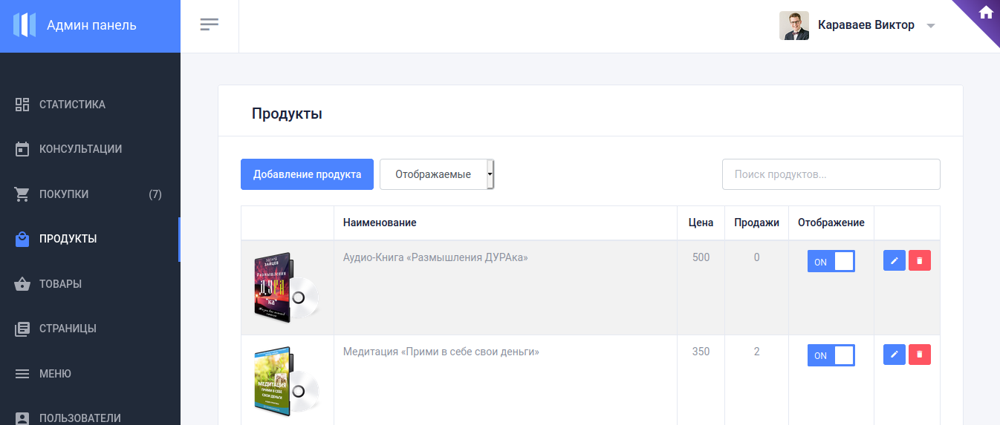
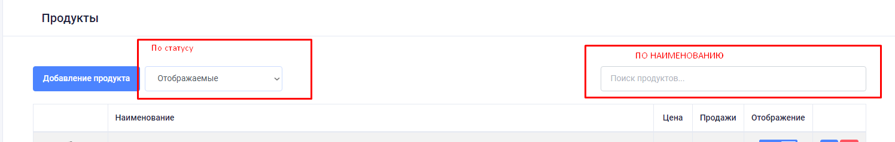
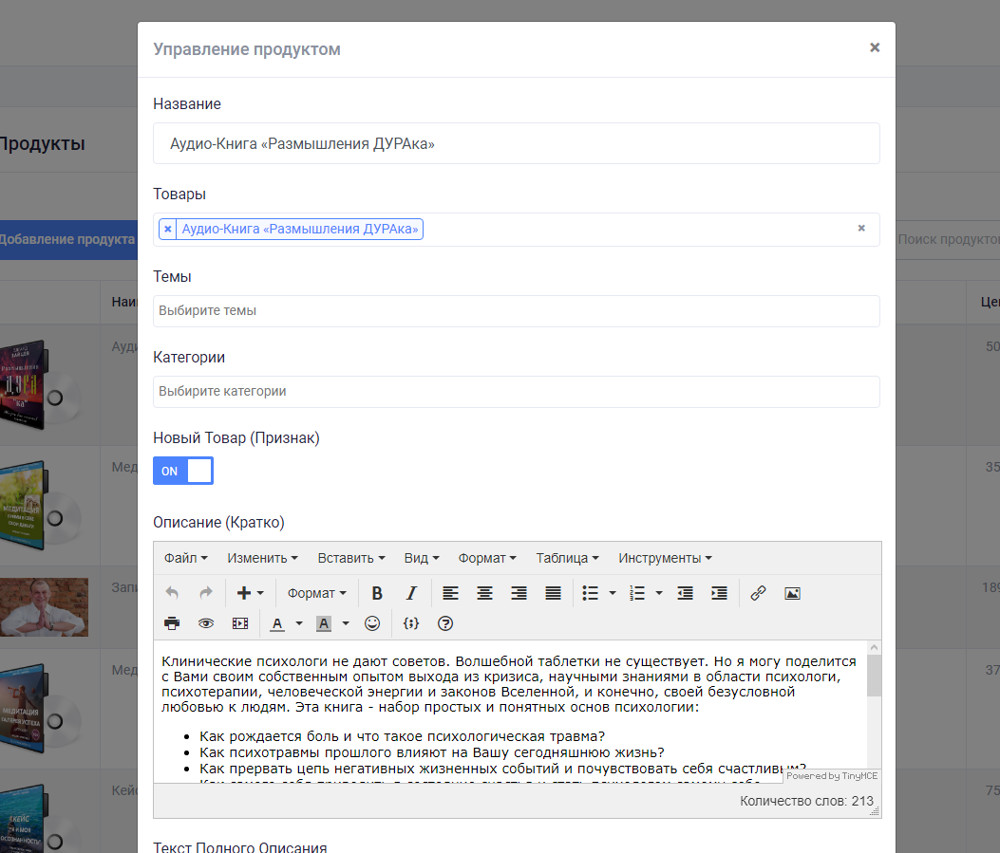
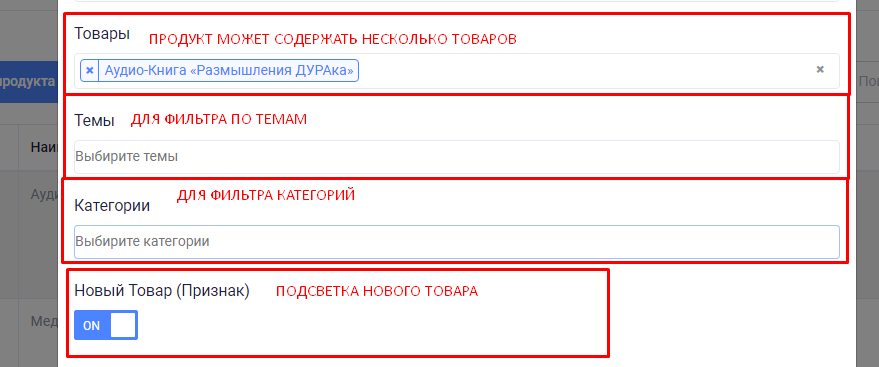
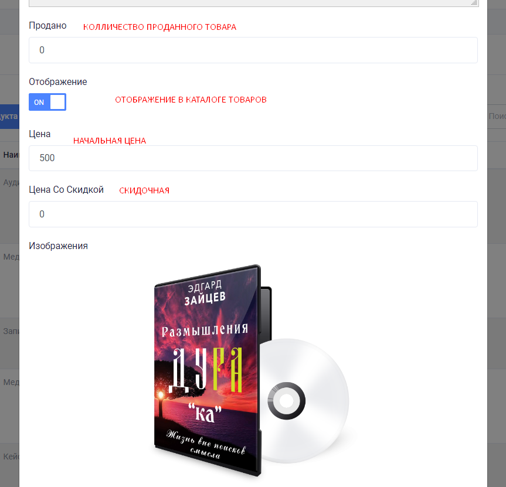
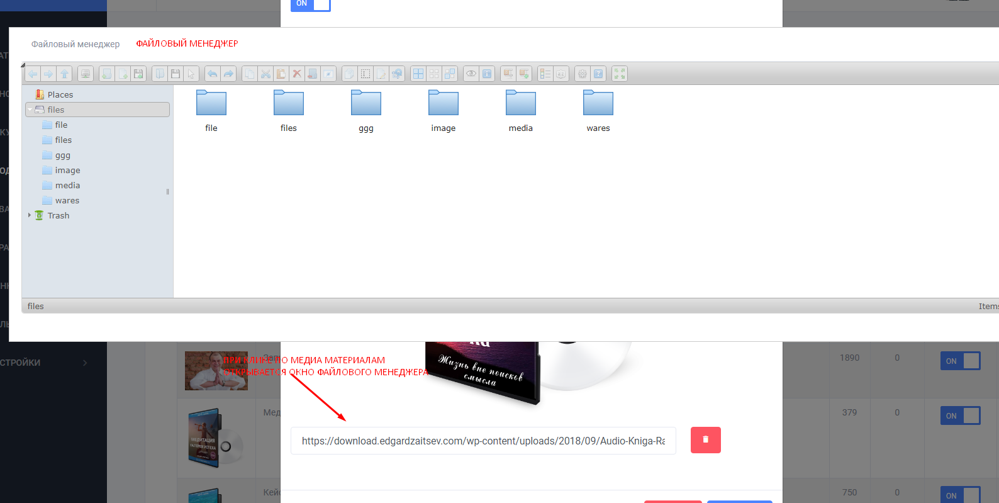

Продукты
Главная страница продуктов
Здесь менеджер формирует продукт из имеющихся товаров
Внимание!
Скрытие или удаление продукта, действует только на каталог продуктов.
Но если пользователь уже приобрел данный товар он у него будет всегда доступен для просмотра или скачивания (при условии что материал доступен физически)
Есть поиск по наименованию продукта

Для удобной навигации предусмотрены фильтры
1. Фильтр по статусу
2. Фильтр по наименованию

Редактирование товара
Кликнув по кнопке добавления или редактирования товара, открывается новое окно "Управление продуктом"

Настройки товара
Продукт может содержать несколько товаров. То есть при единой покупке человек получит несколько продуктов.
Настройка выборки
Для удобной навигации и поиску необходимо обязательно указать
- Тему (О женщине, О родителях, О любви, ...)
- Категорию (Кейсы, Вебинары, Инструкции, ...)

Далее настраиваем по товару следующие поля
- Продано - колличество проданного товара, по умолчанию можно указать значение руками, далее будет значение изменяться при успешных продажах
- Отображение - показывать товар в каталоге продуктов, с возможностью покупки
- Цена - начальная цена
- Цена со скидкой - цена со скидкой, конечное значение (начальная цена зачеркивается и более не актуальна)

Изображения и файлы
Изображение может быть расположено где угодно, даже на другом ресурсе. Просто укажите ссылку на изображение и оно будет использовано
Но намного лучше когда собственные изображения присутствуют на нашем сервере!
Выбор и загрузка файлов и изображений осуществляется через файловый менеджер
Все файлы расположены в специальной папке
Это файловый менеджер предоставляет те же возможности что и файловый менеджер на вашем компьютере, только он работает на нашем сервере в интернете
Есть возможность создавать свои подпапки но сильно не увлекайтесь этим, чтобы сильно не нагружать основную папку
Удаление папки и файлов приведет к полному уничтожению материалов, не рекомендуется удалять файлы и папки, ведь они возможно используются где-то на сайте и станут не доступны более.
